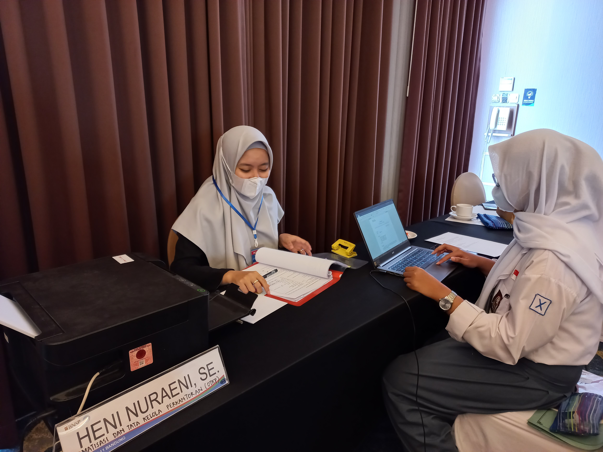

Solusi WFH Produktif
Work from home (WFH) dapat meningkatkan produktivitas dengan cara sebagai berikut:
1. Membuat jadwal kerja yang terstruktur dengan memperhitungkan waktu istirahat dan waktu produktif.
2. Membuat lingkungan kerja yang nyaman dan meminimalisir gangguan yang tidak diperlukan.
3. Menjaga keseimbangan antara pekerjaan dan waktu pribadi dengan cara berolahraga, berinteraksi dengan keluarga atau teman secara online, dan membuat waktu untuk hobi atau kegiatan yang menyenangkan.